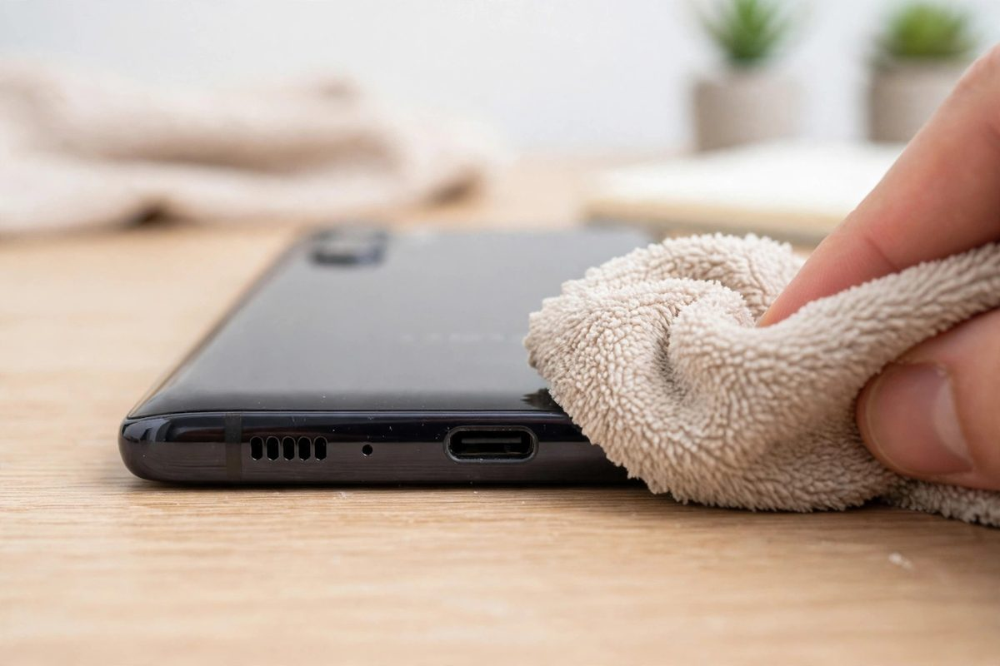

How to Clean a Samsung or Android Phone Speaker

Android phones come in many shapes and sizes, from Samsung Galaxy models to Pixel, Xiaomi, OnePlus, and many others, but they all share the same problem: the speaker grille collects dust, and the sound slowly gets quieter and more muffled. The cleaning method is the same across almost all Android phones. This guide covers the safe, general method for Samsung and other Android phones, plus the things to check for your model.
Finding the Speaker on Your Android Phone
On most Android phones, the main speaker is on the bottom edge, next to the USB-C charging port, behind a row of small holes. Some models have a second speaker at the top, near the earpiece, for stereo sound. A few older or budget models put the speaker on the back instead. If you are not sure where yours is, play music and move your finger around the edges until you feel the vibration.
Before cleaning, work out which speaker is affected. If music and videos sound muffled, the bottom speaker is the problem. If calls are hard to hear, the earpiece at the top needs attention. If sound comes from one side only, the balance may be off, or one grille may be blocked. Remove the case first, and check that Bluetooth is not sending audio elsewhere.
Safe Tools for Cleaning an Android Speaker
Use soft, dry tools only. A clean, soft toothbrush or a small brush made for electronics is the best option for the grille. Sticky tape or adhesive putty made for cleaning electronics can lift dust off the surface of the mesh. A speaker cleaner tool that plays cleaning tones is also safe and effective: the vibrations shake loose dust that a brush cannot reach, and it works on every Android phone through the browser. Our speaker cleaner tool is free and needs no installation.
Be careful with compressed air. A strong blast at close range can push dust deeper into the phone or damage the speaker membrane. If you use it at all, hold the can well away and use only short bursts. Never use a vacuum cleaner on the speaker, because suction can pull on the membrane and damage it.
Step-by-Step: Cleaning the Speaker
Follow these steps in order. Stop any audio, remove the case, and turn the phone face-down so the speaker grille points towards the floor. Brush the grille gently with the soft brush, using short strokes and almost no pressure. Press a small piece of sticky tape lightly over the grille and peel it off to lift surface dust, repeating with a fresh piece if needed. Run a cleaning tone cycle with the speaker cleaner tool for 30 to 60 seconds, keeping the speaker facing down. Play music and listen: if the sound is clearer, you are done, and if not, repeat once more. For the earpiece, brush the narrow slot very lightly and use tape to lift dust. Do not push anything into the slot.
Water in a Samsung or Android Speaker
Many Samsung Galaxy phones and other recent Android models are water resistant, which means they can survive brief splashes and rain, but the speaker will still sound quiet or distorted while water is sitting in the grille. Water resistance protects the inside of the phone; it does not stop water from sitting on the speaker mesh. If your phone got wet, hold it speaker-down and play a water eject cycle for 30 to 60 seconds, repeat it two or three times, and then leave the phone in a dry, ventilated place for at least an hour. Do not charge it until the port is dry, and do not use a hair dryer. See our guide on water eject sounds for the full process.
What to Avoid
- Sharp metal objects: Never put a pin, needle, SIM ejector tool, or paperclip into the speaker holes. The membrane sits just behind the grille and tears easily.
- Liquids and sprays: Do not pour water, alcohol, or cleaning spray into the speaker. Liquid carries dust deeper inside and can damage the parts behind the grille.
- Hard scrubbing: Pressing hard with a brush can bend the mesh or push debris further in. Gentle strokes are more effective.
When Cleaning Is Not Enough
If the sound does not improve after gentle cleaning and a few tone cycles, the cause is probably not dust. Check your audio settings for a volume limit, a mono audio setting, or a balance control that favours one side. Restart the phone to clear any temporary audio glitch, and test the speaker with the sound test tool. If the speaker crackles at every volume, makes no sound at all, or buzzes on certain notes, the speaker itself may be damaged or its connection may be loose. Sound-based cleaning cannot fix hardware damage. A repair shop can test the speaker properly and replace it if needed, and if your phone is still under warranty, check your cover first.
Frequently Asked Questions
Can I use compressed air to clean my Samsung speaker?
Short bursts from a distance are usually fine, but a long, close blast can push dust deeper or damage the membrane. A soft brush and cleaning tones are safer first steps.
Why does one speaker sound louder than the other on my Android phone?
One grille may be blocked with dust while the other is clean, or the audio balance setting may favour one side. Clean both grilles and check the balance setting in your sound settings.
Is it safe to use a speaker cleaner website on Android?
Yes. Cleaning tones are within the range the speaker is designed to produce. Use short cycles of 30 to 60 seconds, and do not play loud tones continuously for a long time.
Related guides
You may also find these guides useful: